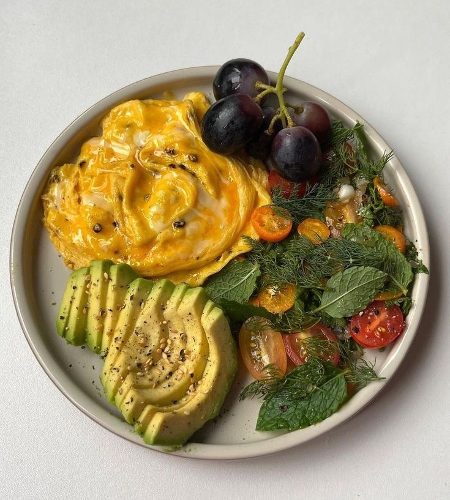

Keeping cooking simple

Food is a very important part of everyone's life. If you want to be healthy, you have to eat healthy. One of the easiest ways to do that is to keep your cooking nice and simple. You don’t need complicated recipes or fancy ingredients to nourish your body, sometimes the most wholesome meals are the ones made with just a few fresh, basic items. Simplicity in cooking not only saves time but also helps you stay consistent with healthy habits.
Focus on freshness
Healthy eating doesn’t have to mean strict diets or expensive superfoods. It’s about choosing fresh, seasonal ingredients and letting them shine. A simple salad, a bowl of soup, or a stir-fry with colorful vegetables can be both satisfying and nutritious. When you focus on freshness, you naturally cut down on processed foods and unnecessary additives, making your meals lighter and easier to digest.
Trusting Your Own Pace
Eating well is not about perfection, it’s about balance.Allow yourself to enjoy comfort foods occasionally, but keep your everyday meals grounded in simplicity and nourishment. Cooking at home, even with basic recipes, gives you control over what goes into your body and helps you build a healthier relationship with food. When you stop comparing your meals to elaborate dishes you see online, you’ll realize that simple, balanced cooking is more than enough to keep you healthy and happy.